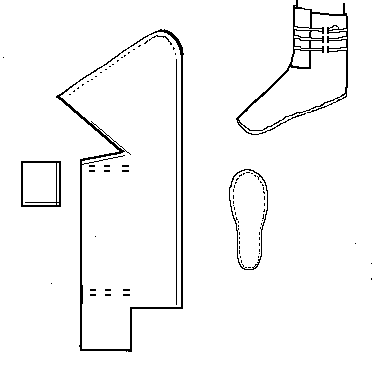
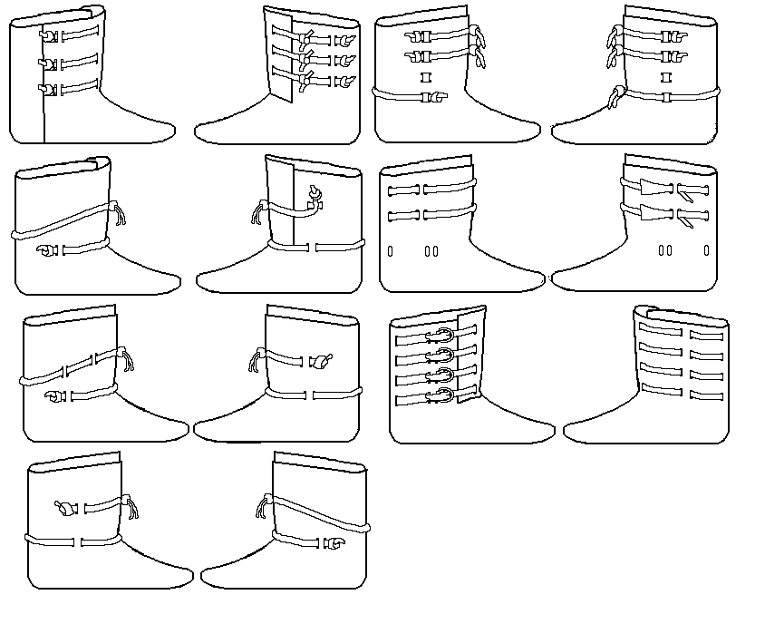

Drawstring boot
A drawstring boot, based on examples in
Shoes and Pattens (Fig 34).
Made with a rand or a full welt. The basic design is MY estimate of the pattern, and may not be absolutely accurate.There are other interpretations of laced boots found in Schanck.

Return to
[Middle Ages Index]
[High Middle Ages Index] or
[Next]
Footwear of the Middle Ages - Historical Shoe Designs/Number 30, by I. Marc Carlson. Copyright 1996
This page is given for the free exchange of information, provided the Author's Name is included in all future revisions, and no money change hands, other than as expressed in the Copyright Page.